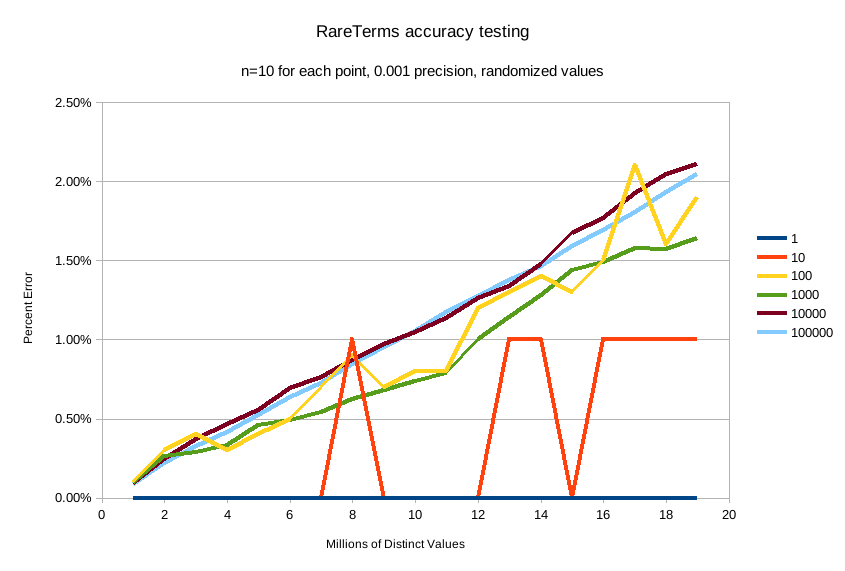

本地英文版地址: ../en/search-aggregations-bucket-rare-terms-aggregation.html
一个多桶聚合，基于值源，用于查找“稀有”的词项，即位于分布长尾且不常用的词项。
从概念上讲，这类似于按_count升序排序的terms聚合。
正如terms聚合文档中所指出的，实际上按计数升序对terms聚合进行排序会产生极大的误差。
相反，应该使用rare_terms聚合。
孤立地看，rare_terms聚合如下所示：
{
"rare_terms": {
"field": "the_field",
"max_doc_count": 1
}
}
表 6. rare_terms 参数
参数名称 |
描述 |
是否必须 |
默认值 |
|
希望搜索稀有词项的字段 |
必须的 |
|
|
一个词项应该出现在文档中的最大数量。 |
可选 |
|
|
内部布谷鸟顾虑器(CuckooFilters)的精度。精度越小，近似值越精确，但内存使用率越高。 但是不能小于 |
可选 |
|
|
应包含在聚合中的词项 |
可选 |
|
|
应从聚合中排除的词项 |
可选 |
|
|
如果文档中没有正在聚合的字段，则应使用的值 |
可选 |
示例：
GET /_search
{
"aggs" : {
"genres" : {
"rare_terms" : {
"field" : "genre"
}
}
}
}
响应：
{
...
"aggregations" : {
"genres" : {
"buckets" : [
{
"key" : "swing",
"doc_count" : 1
}
]
}
}
}
在这个例子中，我们看到的唯一的桶是“swing”桶，因为它是唯一出现在一个文档中的词项。
如果我们将max_doc_count增加到2，我们将看到更多的桶：
GET /_search
{
"aggs" : {
"genres" : {
"rare_terms" : {
"field" : "genre",
"max_doc_count": 2
}
}
}
}
现在显示了“jazz”词项，其doc_count为2：
{
...
"aggregations" : {
"genres" : {
"buckets" : [
{
"key" : "swing",
"doc_count" : 1
},
{
"key" : "jazz",
"doc_count" : 2
}
]
}
}
}
参数max_doc_count用于控制一个词项可以拥有的文档数量的上限。
像terms聚合一样，rare_terms聚合没有大小限制。
这意味着将返回符合max_doc_count标准的词项。
聚合以这种方式运行，以避免困扰terms聚合的升序问题。
然而，这确实意味着如果选择不正确，可能会返回大量结果。
为了限制这种设置的危险性，max_doc_count的最大值是100。
由于其工作方式的原因，rare_terms 聚合比其他聚合更容易超出search.max_buckets软限制。
当聚合收集结果时，max_bucket软限制基于每个分片进行评估。
一个词项在一个分片上可能是“稀有的”，但是一旦所有分片结果合并在一起，它就变得“不稀有”了。
这意味着单个分片倾向于收集比真正罕见的更多的桶，因为它们只有自己的本地视图。
这个列表最终在协调节点上被删减为正确的、更小的稀有词项列表……但是一个分片可能已经触发了max_buckets软限制并中止了请求。
当对可能包含许多“罕见”术语的字段进行聚合时，你可能需要增加max_buckets软限制的值。
或者，你可能需要找到一种方法来过滤结果，以返回更少的稀有值(更小的时间跨度、按类别过滤等)，或者重新评估你对“稀有”的定义(例如，如果某个东西出现100,000次，它真的“稀有”吗？)
确定数据集中“罕见的”词项的简单方法是将所有值放在一个映射中，随着每个文档被访问，计数递增，然后返回底部的n行。
这甚至不能扩展到中等大小的数据集。
一种仅保留来自每个分片的“前n”个值(也称为terms聚合)的分片方法会失败，因为问题的长尾特性意味着，如果不简单地收集来自所有分片的所有值，就不可能找到“前n”个底部的值。
相反，rare_terms聚合使用不同的近似算法：
- 第一次看到值时，它们会被放置在一个映射中。
- 该词项每增加一次，映射中的计数器就加一
-
如果计数器大于
max_doc_count阈值，则从映射中移除该词项，并将其放入布谷鸟过滤器(CuckooFilter)中 - 每个词项都要参考布谷鸟过滤器(CuckooFilter)。 如果该值在过滤器内，则已知它已经高于阈值并被跳过。
执行后，值的映射是max_doc_count阈值下的“稀有”词项的映射。
然后这个映射和布谷鸟过滤器与所有其他分片合并。
如果有大于阈值的此昂(或出现在不同分片的布谷鸟过滤器中),该词项将从合并列表中删除。
最终的值映射作为“稀有”词项返回给用户。
布谷鸟过滤器有可能返回误报(它们可以说某个值存在于它们的集合中，而实际上它并不存在)。 由于布谷鸟过滤器用于查看某项是否超过阈值，这意味着布谷鸟过滤器的误报将错误地认为某个值是常见的，而实际上它并不是常见的(从而将其从桶的最终列表中排除)。 实际上，这意味着聚合表现出假阴性行为，因为过滤器的使用与人们通常认为的近似集合成员草图的方式“相反”。
布谷鸟过滤器在论文中有更详细的描述：
Fan, Bin, et al. "Cuckoo filter: Practically better than bloom." 第10届ACM国际新兴网络实验和技术会议录。美国计算机学会，2014年。
Although the internal CuckooFilter is approximate in nature, the false-negative rate can be controlled with a
precision parameter. This allows the user to trade more runtime memory for more accurate results.
The default precision is 0.001, and the smallest (e.g. most accurate and largest memory overhead) is 0.00001.
Below are some charts which demonstrate how the accuracy of the aggregation is affected by precision and number
of distinct terms.
The X-axis shows the number of distinct values the aggregation has seen, and the Y-axis shows the percent error.
Each line series represents one "rarity" condition (ranging from one rare item to 100,000 rare items). For example,
the orange "10" line means ten of the values were "rare" (doc_count == 1), out of 1-20m distinct values (where the
rest of the values had doc_count > 1)
This first chart shows precision 0.01:

And precision 0.001 (the default):

And finally precision 0.0001:

The default precision of 0.001 maintains an accuracy of < 2.5% for the tested conditions, and accuracy slowly
degrades in a controlled, linear fashion as the number of distinct values increases.
The default precision of 0.001 has a memory profile of 1.748⁻⁶ * n bytes, where n is the number
of distinct values the aggregation has seen (it can also be roughly eyeballed, e.g. 20 million unique values is about
30mb of memory). The memory usage is linear to the number of distinct values regardless of which precision is chosen,
the precision only affects the slope of the memory profile as seen in this chart:

For comparison, an equivalent terms aggregation at 20 million buckets would be roughly
20m * 69b == ~1.38gb (with 69 bytes being a very optimistic estimate of an empty bucket cost, far lower than what
the circuit breaker accounts for). So although the rare_terms agg is relatively heavy, it is still orders of
magnitude smaller than the equivalent terms aggregation
Filtering Valuesedit
It is possible to filter the values for which buckets will be created. This can be done using the include and
exclude parameters which are based on regular expression strings or arrays of exact values. Additionally,
include clauses can filter using partition expressions.
Filtering Values with regular expressionsedit
GET /_search
{
"aggs" : {
"genres" : {
"rare_terms" : {
"field" : "genre",
"include" : "swi*",
"exclude" : "electro*"
}
}
}
}
In the above example, buckets will be created for all the tags that starts with swi, except those starting
with electro (so the tag swing will be aggregated but not electro_swing). The include regular expression will determine what
values are "allowed" to be aggregated, while the exclude determines the values that should not be aggregated. When
both are defined, the exclude has precedence, meaning, the include is evaluated first and only then the exclude.
The syntax is the same as regexp queries.
Filtering Values with exact valuesedit
For matching based on exact values the include and exclude parameters can simply take an array of
strings that represent the terms as they are found in the index:
GET /_search
{
"aggs" : {
"genres" : {
"rare_terms" : {
"field" : "genre",
"include" : ["swing", "rock"],
"exclude" : ["jazz"]
}
}
}
}
Missing valueedit
The missing parameter defines how documents that are missing a value should be treated.
By default they will be ignored but it is also possible to treat them as if they
had a value.
Nested, RareTerms, and scoring sub-aggregationsedit
The RareTerms aggregation has to operate in breadth_first mode, since it needs to prune terms as doc count thresholds
are breached. This requirement means the RareTerms aggregation is incompatible with certain combinations of aggregations
that require depth_first. In particular, scoring sub-aggregations that are inside a nested force the entire aggregation tree to run
in depth_first mode. This will throw an exception since RareTerms is unable to process depth_first.
As a concrete example, if rare_terms aggregation is the child of a nested aggregation, and one of the child aggregations of rare_terms
needs document scores (like a top_hits aggregation), this will throw an exception.